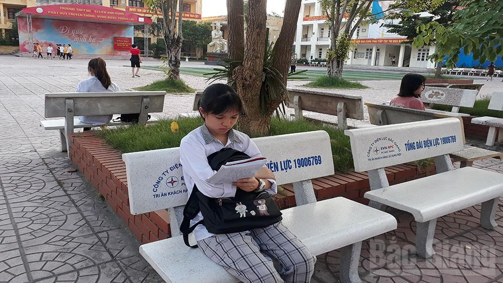

Thi tuyển sinh vào lớp 10 tại Bắc Giang: Đề thi Ngữ văn vừa sức, bám sát chương trình
(Theo BGĐT) - Sáng 16/7, sau 120 phút làm bài, các thí sinh đã hoàn thành môn thi đầu tiên của kỳ thi tuyển sinh lớp 10 THPT công lập năm học 2020-2021 tại tỉnh Bắc Giang. Nhiều thí sinh cho biết đề thi môn Ngữ văn vừa sức nên các em làm được bài và không khó để đạt 7-8 điểm
{kind=link}
Thí sinh ở huyện Hiệp Hòa phấn khởi sau khi hoàn thành bài thi.
Từ sáng sớm, nhiều thí sinh đã có mặt tại trường, tranh thủ ôn lại bài để bước vào môn thi đầu tiên.
Tại Trường THPT Yên Dũng số 2, đội thanh niên tình nguyện của đoàn các xã, thị trấn cụm Đông Bắc phối hợp với đoàn trường tổ chức điểm tặng nước uống cho các em.
Lực lượng cảnh sát giao thông làm nhiệm vụ giải tỏa khu vực cổng trường không để ùn tắc. Rất đông phụ huynh đứng đợi con ở hai bên vỉa hè.
Thí sinh tại trường THPT Yên Dũng số 2 trao đổi về đề thi. |
{kind=link}
Tại điểm thi Trường THPT Sơn Động số 1, nhiều phụ huynh đưa con đến điểm thi và ngồi đợi đến khi con thi xong, mặc dù thời tiết nắng nóng.
Gần 80 thanh niên tình nguyện, tiếp sức, hỗ trợ nước uống, hướng dẫn để xe, gửi đồ và tặng bút cho các thí sinh. Cô giáo Hoàng Thị Việt Hà, Chủ tịch Hội đồng tuyển sinh vào lớp 10 Trường THPT Sơn Động số 1 cho biết: Hội đồng thi chuẩn bị đầy đủ cơ sở vật chất bảo đảm sức khỏe cho cán bộ, giám thị coi thi, đặc biệt là với thí sinh như: Quạt mát, nước uống, trang thiết bị sơ cấp cứu nếu có tình huống xấu về sức khỏe.
Tại các trường như THPT Ngô Sĩ Liên, Thái Thuận (TP Bắc Giang); THPT Lục Nam, đoàn viên thanh niên và lực lượng công an phối hợp hỗ trợ thí sinh, điều tiết phân luồng giao thông bảo đảm an toàn, trật tự tại cổng trường.
Đưa con đến dự thi tại Trường THPT Ngô Sĩ Liên, chị Nguyễn Thị Dung, nhà ở xã Nghĩa Trung (Việt Yên) chia sẻ: Mặc dù con gái tôi học đều các môn, những lần thi thử đều đạt điểm khá trở lên nhưng tôi vẫn lo lắng. Sáng nay, từ 5h30 tôi đã đưa con đến trường dự thi và mong cháu sẽ đạt kết quả tốt”.
Kết thúc thời gian làm bài, nhiều học sinh thở phào khi đề không quá khó. Đề theo hình thức tự luận, gồm ba câu, trong đó câu 1 yêu cầu thí sinh xác định thể thơ, phương thức biểu đạt chính, tìm và nêu tác dụng biện pháp tu từ trong đoạn thơ; câu 2 viết đoạn văn nghị luận trình bày suy nghĩ về ý nghĩa của tinh thần đoàn kết trong cuộc sống con người.
Em Phạm Thị Khánh Vân, xã Hương Gián (Yên Dũng) cho biết, câu 3 cảm nhận về đoạn thơ trong bài “Viếng lăng Bác” của Viễn Phương (5 điểm), em và các bạn đã từng được ôn tập vào các đợt thi thử nên có thể đạt từ 3-4 điểm. Các câu 1 và 2 cũng là những kiến thức được ôn luyện thường xuyên. Vân và nhiều bạn dự kiến bài thi ít nhất sẽ được 7 điểm.
Chung cảm nhận, em Nguyễn Thị Khánh Chi, học sinh Trường THCS Ngô Sĩ Liên bộc bạch: “Em thích nhất câu 3, với việc phân tích, nêu ý nghĩa của đoạn thơ trong bài thơ “Viếng lăng Bác”, em đánh giá bài làm của mình có cảm xúc và kỳ vọng sẽ đạt điểm cao”.
Tại huyện Hiệp Hòa, thí sinh Nguyễn Thị Hiền, xã Hoàng Vân chia sẻ: Đề thi môn Ngữ văn năm nay không quá khó, phần đọc - hiểu đơn giản, dễ đạt điểm cao, nội dung hướng về những vấn đề mang tính cấp thiết, nóng hổi, có tính thời sự cao nhưng quan trọng hơn vẫn hướng con người đến những suy nghĩ tích cực.
Cô giáo Nguyễn Thị Ngân, Trường THCS Tân Mỹ (TP Bắc Giang) nhận xét: Đề thi vừa sức, bám sát chương trình, câu 1 và 2 nằm trong giới hạn ôn thi, câu 3 tuy bất ngờ nhưng không khó vì cũng là kiến thức trong chương trình học kỳ II, học sinh đã được ôn luyện nhiều và qua đó rèn học sinh tránh lối học “tủ”. Với đề thi này, khả năng tỷ lệ thí sinh đạt được 7-8 điểm sẽ cao.
Được biết, để bảo đảm kỳ thi được tổ chức an toàn, đúng quy chế, Sở Giáo dục và Đào tạo điều động 102 cán bộ làm nhiệm vụ thanh tra cắm chốt tại 31 hội đồng thi và thành lập 3 đoàn để thanh tra, kiểm tra tại tất cả các hội đồng thi trong toàn tỉnh.
14 giờ chiều nay, các thí sinh tiếp tục thi môn Tiếng Anh.
Dưới đây là một số hình ảnh của kỳ thi phóng viên ghi nhận vào sáng 16/7:
|  |
Một số thí sinh đến điểm thi Trường THPT Ngô Sĩ Liên (TP Bắc Giang) từ 5h45 phút sáng . |
{kind=link}
Thí sinh tại điểm thi Trường THPT Thái Thuận (TP Bắc Giang) được tặng nước uống trước khi vào phòng thi. |
{kind=link}
Lực lượng cảnh sát giao thông hỗ trợ bảo đảm trật tự tại điểm thi Trường THPT Thái Thuận. |
{kind=link}
Phụ huynh và giáo viên kiểm tra giấy tờ cho thí sinh trước khi vào phòng thi tại Trường THPT Ngô Sĩ Liên (TP Bắc Giang). |
{kind=link}
Thí sinh vào phòng thi tại Trường THPT Sơn Động số 1. |
{kind=link}
Giám thị coi thi hướng dẫn thí sinh ghi họ tên, số báo danh tại điểm thi Trường THPT Thái Thuận (TP Bắc Giang). |
{kind=link}
Đoàn cán bộ Sở Giáo dục và Đào tạo kiểm tra phòng thi tại Trường THPT Ngô Sĩ Liên (TP Bắc Giang). |
|